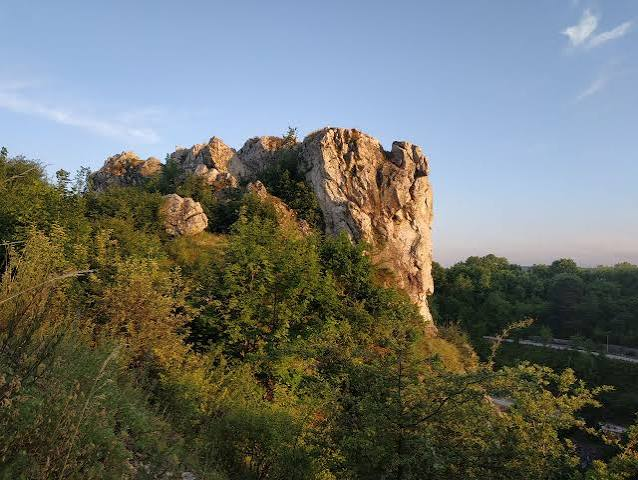
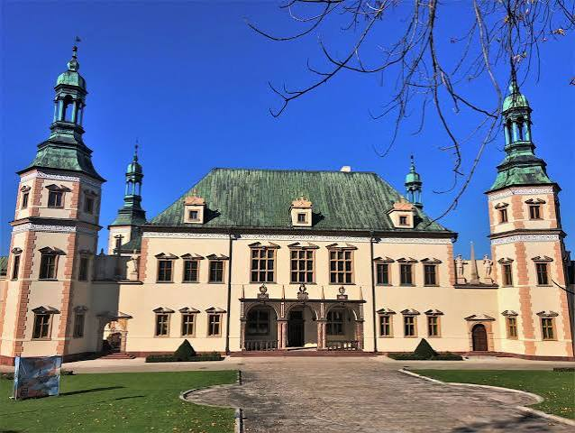
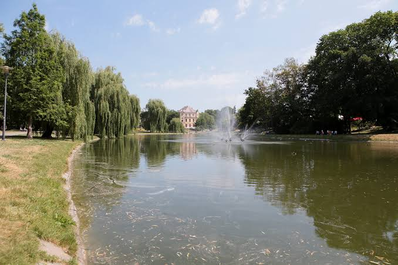
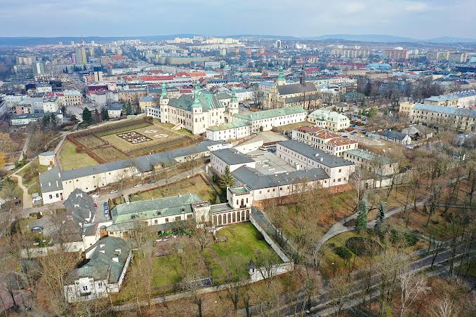

KIELCE – MIASTO, KTÓRE WARTO ZOBACZYĆ.
PRACA ROBIONA PRZZ AI
Poznaj miejsca, które warto odwiedzić w stolicy województwa świętokrzyskiego.
Witaj w Kielcach!
Kielce to miasto położone w sercu Gór Świętokrzyskich. Można tu znaleźć zarówno ciekawe zabytki, jak i wyjątkowe miejsca przyrodnicze. Zobacz, które atrakcje warto odwiedzić podczas spaceru po mieście.
Najciekawsze miejsca

Rezerwat Kadzielnia
Jedno z najbardziej charakterystycznych miejsc w Kielcach. Dawny kamieniołom zachwyca wapiennymi skałami, zielenią oraz malowniczym widokiem.
Dlaczego warto odwiedzić: Oferuje przepiękne trasy spacerowe, podziemną trasę turystyczną w jaskiniach oraz słynny amfiteatr.

Pałac Biskupów Krakowskich
Barokowa rezydencja będąca jednym z najważniejszych zabytków Kielc. Obecnie mieści się tutaj Muzeum Narodowe.
Dlaczego warto odwiedzić: Wspaniale zachowana architektura z XVII wieku oraz unikalny Ogród Włoski tuż za pałacem.

Park Miejski im. Stanisława Staszica
Jeden z najstarszych parków miejskich w Polsce, położony w samym centrum miasta u stóp Wzgórza Zamkowego.
Dlaczego warto odwiedzić: Stare drzewostany, malownicze stawy z ptactwem oraz idealne miejsce na wyciszenie i odpoczynek.

Wzgórze Zamkowe
Zabytkowy obszar w centrum Kielc, stanowiący historyczny i kulturalny punkt miasta z wieloma ważnymi obiektami.
Dlaczego warto odwiedzić: Miejsce łączące historię, sztukę (Ośrodek Myśli Patriotycznej i Ośrodek Teatralny) oraz piękny punkt widokowy.
Sprawdź informacje o atrakcji
Zaznacz miejsca, które już odwiedziłeś:
Kielce warto odwiedzić ze względu na:
Zabytki architektury i bogatą historię
Wyjątkową przyrodę oraz geologiczne rezerwaty
Liczne wydarzenia kulturalne i festiwale
Atrakcyjne szlaki turystyczne i rowerowe
O Kielcach
Kielce to stolica i największe miasto województwa świętokrzyskiego, stanowiące regionalne centrum gospodarcze, naukowe oraz kulturalne. Położone nad rzeką Silnicą, w malowniczej kotlinie Gór Świętokrzyskich, zachwycają unikalną w skali europejskiej geologią. W granicach administracyjnych miasta znajduje się aż pięć rezerwatów przyrody, co czyni Kielce wyjątkowym miejscem na mapie Polski.
Dzieje miasta sięgają średniowiecza, a przez całe stulecia Kielce stanowiły własność biskupów krakowskich, co wywarło ogromny wpływ na architekturę i układ urbanistyczny centrum. Dziś to nowoczesne miasto, które doskonale łączy historyczne dziedzictwo z otwarciem na turystykę, rekreację oraz dynamiczny rozwój infrastruktury miejskiej.